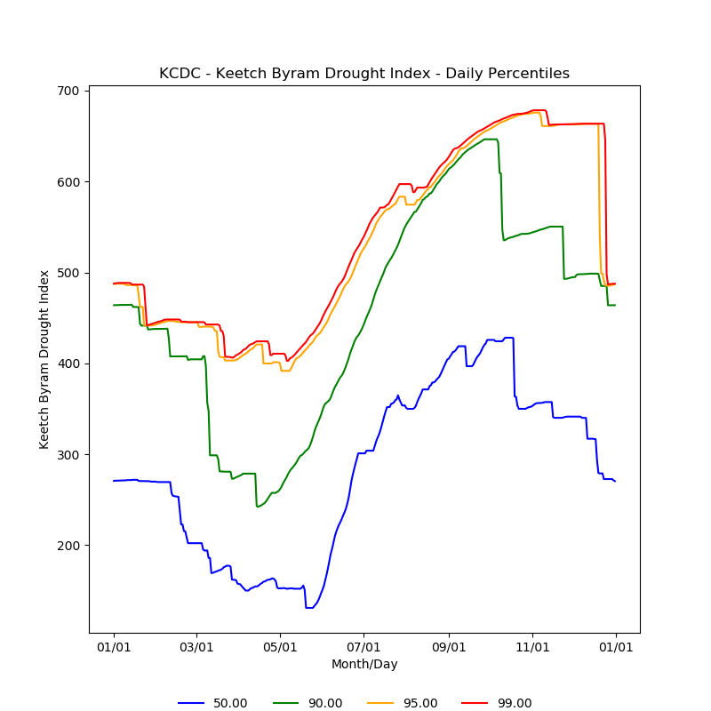

These summaries were derived from records archived by Synoptic Data PBC. While the entire state of Utah is prone to wildfires, many of these stations were selected due to their proximity to areas with higher risk.
This graph shows the calculated Keetch Byram's Drought Index (KBDI) from the beginning of this current year to yesterday. The KBDI is calculated using the total precipitation and the Maximum Temperature for that day. The orange dashed line is the 95th percentile values observed near that time of year based on the available data record.

Percentile graphs highlight the typical conditions (50th percentile or median) computed for the daily KBDI values from the available data record. For the KBDI, the frequency of extreme events are shown by the 90th, 95th, and 99th percentile values.

| Station Name | Station ID | Network Type | First Data Date | Elevation (ft) |
| Cedar City Municipal Airport | KCDC | NWS/FAA | 1997-01-01 | 5581 |